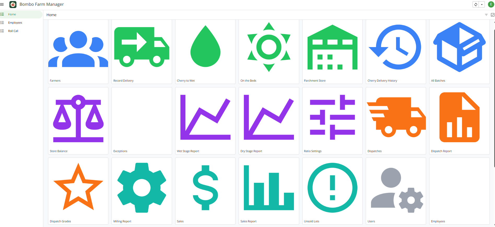

Kapsabet, Kenya · open to roles in Kenya and Germany
Application developer and IT professional with roughly a decade of experience turning messy real-world problems into working systems. Full-stack web, a former business analyst's eye for requirements, and a habit of shipping things people actually rely on.
Selected work
Application developer · Django / HTMX progressive web app
A management system for a smallholder washed-process coffee cooperative, rebuilt from an AppSheet prototype into a proper Django progressive web app. It tracks plots, coffee varieties, harvest batches and yields, with role-based access so pickers, weighers and managers each see only what they need. Includes SMS notifications through the Africa's Talking API and a fix for a batch-ID race condition that had been double-counting deliveries.

Media and AV lead · AIC Boma Kapsabet
End-to-end live production for weekly services: multi-camera capture, live switching and streaming. I run OBS Studio with Canon XA60 and EOS R50 V cameras through an AVMATRIX Shark S4 switcher, and generate bilingual sermon slide decks programmatically so the words on screen keep pace with the service. Reliable, repeatable, and handed off to a volunteer team.
Independent · Geryngman Writers & Freelance Dev
Custom web and mobile builds for local businesses and international clients. Django and Python on the backend, Flutter on mobile, and M-Pesa Daraja API integration for Kenyan businesses taking mobile payments. When a team needs something working now, I also build on AppSheet rather than making them wait for a full custom system.
About
I started out as a senior business analyst, which is still how I approach building software: understand how the work really happens before writing a line of code. That means the systems I ship fit the people using them, rather than forcing them to bend around the software.
Alongside development I have spent close to a decade providing research and technical writing support to graduate and postgraduate students, which keeps my documentation clear and my thinking organised. I am equally comfortable writing clean code and writing a clear report for people who will never read the code.
I am currently open to application developer roles, both locally and internationally, and I am actively preparing to relocate to Germany for work. I manage several demanding commitments at once and I am used to owning a problem from first conversation to working system.
Skills